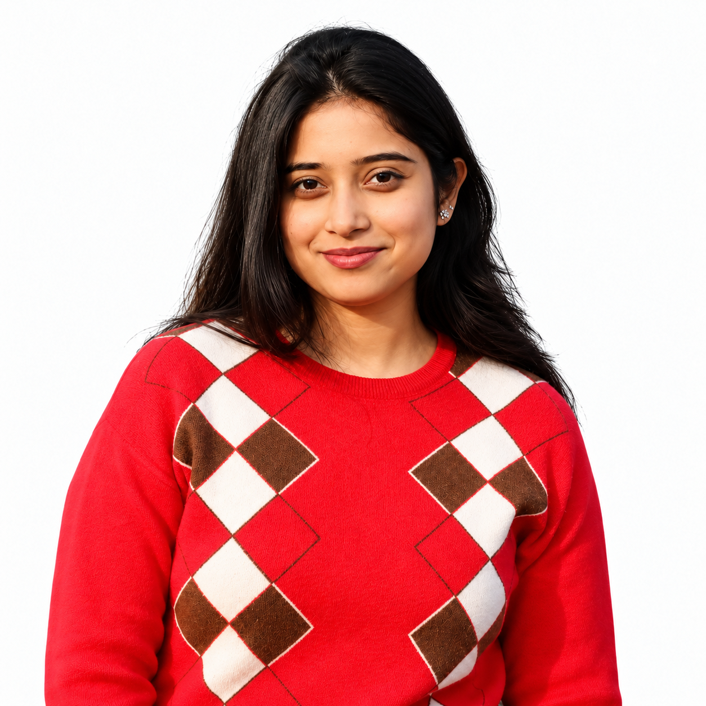

Hydrological modelling Phalgu River Basin
Integrated Groundwater management through Hybrid approaches.
Advancing geospatial science for water, climate, hazards and sustainable communities through interdisciplinary research, Earth observation and data-driven modelling.
The GeoHydro-Climate Lab is an interdisciplinary research group at the intersection of geology, hydrology and climate science dedicated to investigating the complex relationships between the earth, water systems and climate focusing on South Bihar region. The overarching goal of the GeoHydro-Climate lab is to observe, analyse, model and understand earth systems to identify pathways towards climate-resilient and sustainable resource management.
We combine Hydrogeological and Geomorphological analysis, Field investigation, Laboratory analysis, GIS, Remote Sensing and Machine Learning to investigate complex environmental systems.
Our research spans Geo-environmental processes, hazards, geospatial technologies , training capacity building and community resilience.
Hydrological processes, Social Hydrology, Watershed dynamics, Hydrochemistry, Groundwater and hydro-climatic variability.
Climate Variability, hydroclimatic extremes, Geohazards, Land water climate nexus, Flood hazards, River rejuvenation.
Earth observations, landscape monitoring, Geospatial analysis & Cloud Computing, Explainable and data-driven approaches for hydrological & environmental modelling .
Community resilience, Capacity Building, Decision support system, Shared Socio-Economic Pathways(SSPs).
Integrated Groundwater management through Hybrid approaches.
Integrated approach towards sustainable use of Groundwater resource.
Integrated flood-risk assessment using Earth observation, hydrological modelling, climate scenarios and machine learning for Community Resilience.
Multi-source geospatial modelling of Groundwater prospects, Wetlands, Climate Dynamics and Hydrogeological variability.
Multi-source geospatial modelling of Groundwater prospects, Wetlands, Climate Dynamics and Hydrogeological variability.
Peer-reviewed articles, journal publications, and scientific contributions from the GeoHydro-Climate Lab.
| # | Date | Title | Authors | Journal | Link |
|---|
Recent events, field investigations, laboratory milestones, and academic conferences from the GeoHydro-Climate Lab.
GHC Lab supports collaborative research, doctoral work, student projects and hands-on geospatial learning.

Multiparameter probe for pH, EC, TDS, Temperature and Dissolved Oxygen, hydrological and geospatial field investigations.
Hands-on learning in GIS, remote sensing, geospatial modelling and research workflows.
ArcGIS, QGIS, GeoMedia, Erdas Imagine for Spatial Analysis and Geochemical plotting Softwares(Piper, Gibbs).
Knowledge exchange through academic discussions, demonstrations and collaborative activities.
Participation in Earth Day, World Environment Day, plantation and community-oriented activities.
For Doctoral & Post-Doctoral Research, Master's Dissertation, Student opportunities, Training, Research Collaboration, Academic activities or geospatial research discussions, contact the GeoHydro-Climate Lab, Department of Geology.